Source occupancy and the modeled two-value finish are provisionally frozen. This sheet is the wordmark gate only: 4–6 legally shippable paths against Direction 04. Thin, severe, inscriptional, archaeological-future. Same artifact-world as the mark. No type zoo. No proprietary Canela. No generic luxury-fashion serif as the answer. No sci-fi display gimmick. Shipping Newsreader lockups are not candidates. Fraunces is the previous candidate — closer than Newsreader, still too calligraphic and soft.
04 is mixed-case, not Trajan caps. Authority is carved contrast and composure, not a movie-title unicase. Mark and word sit in one artifact-world: columns around a slot, then an inscriptional serif of similar density.
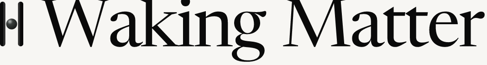
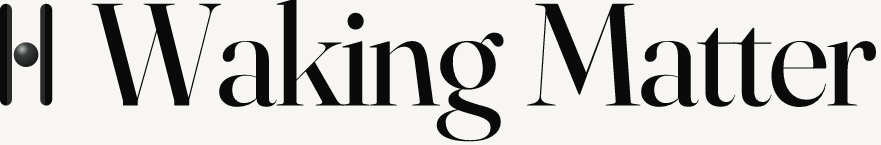
Newsreader is a newspaper text face at display size. Fraunces has the right optical-size idea and is closer to 04, but the a and g still write, they do not carve.
OFL 1.1, Duarte Pinto. Contemporary high-contrast display. Deliberate Canela stand-in: two-story a with a teardrop, closed-loop g, high-crotch W, wide M. Tracking −0.03. Mark gap 0.38 × cap (04-tight). Risk: editorial-fashion adjacency. Not Playfair; still the nearest legal 04 match.
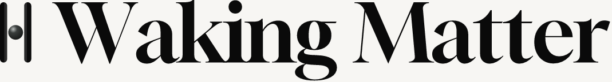

Same outlined Gloock wordmark. Restrained modification only: tracking −0.01 and mark-to-type gap 0.58 × cap. Borrow 02 for negative space, not for sci-fi. Ask whether the frozen mark needs more air to read as an object beside the name. 04 itself is tighter.
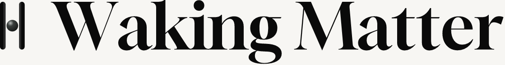
OFL 1.1, Owen Earl. opsz 96, wght 400. Hairline Didone. The austere pole: thin, carved, vertical stress. M crotch stays high. Risk: generic luxury-fashion serif — the thing the brief forbids as an answer. Held so the severe pole is visible, not so it wins by default.
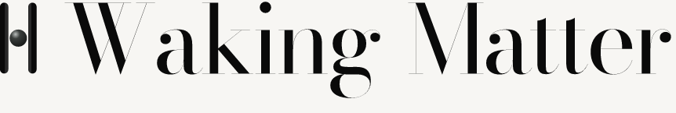
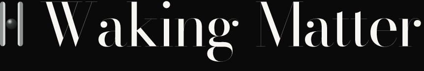
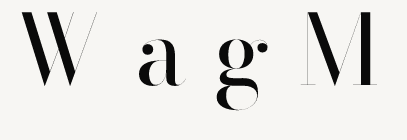
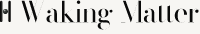
OFL 1.1. Thin, small x-height, lower contrast than 04. Reads more memorial / carved than fashion-Didone. Mixed case, so it stays in 04’s language. Weakness: the word can feel light against the frozen columns. The archaeological path that is not Trajan caps.
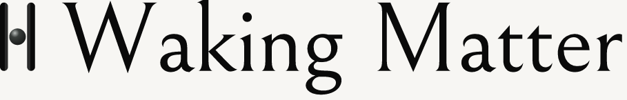
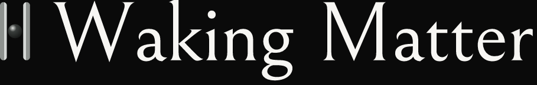
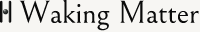
OFL 1.1, Google. High-contrast display cut, not a fashion face. Production-safe. W and M are sturdy; a and g are book-display oldstyle. Less Dune, less 04. The path if critic refuses anything Canela-adjacent as luxury.
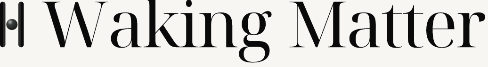
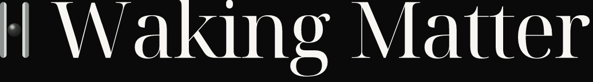
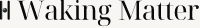
OFL 1.1, Natanael Gama. Inscriptional caps, tracking +0.10. The archaeological-future / Dune experiment. It is not 04: 04 is mixed-case Canela, not movie-title Trajan. Costume risk is real. Held so the pole is visible.
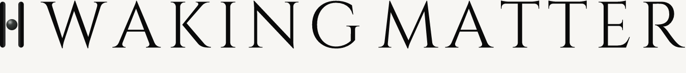
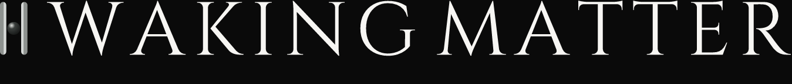
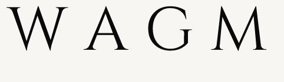
| W | a | g | M | Terminals | Contrast / width | |
|---|---|---|---|---|---|---|
| 04 Canela | wide, high crotch | two-story, teardrop | closed loop, small ear | wide, pointed | sharp + teardrop | high / generous |
| Gloock | closest | closest | closest | closest | teardrop, not a ball | high / close to 04 |
| Bodoni Moda | hairline, severe | Didone, small | ear as a ball | high crotch | unbracketed hairline | extreme / wide |
| Bellefair | lighter | small, oldstyle | memorial loop | lighter | softer, carved | moderate / open |
| Noto Display | sturdy | book-display | oldstyle ear | sturdy | bracketed | high / wide |
| Cinzel | Trajan | — | — | Trajan | flared inscriptional | moderate / caps |
| Fraunces | softer | round, written | calligraphic ear | softer | oldstyle, soft | medium / wide |
Recommend: Gloock, 04-tight lockup.
It is the only path whose W a g M sit in the same artifact-world as Direction 04 without becoming Trajan caps or a fashion Didone. Harder than Fraunces. OFL, outline-able, no proprietary dependency. Keep 04 mark-to-type gap. Do not take Bodoni (luxury-fashion). Do not take Cinzel (costume Dune). Bellefair and Noto are the fallbacks if Gloock is judged too editorial-fashion. Gloock+02 air is spacing-only — use it only if the frozen mark needs more object-space. Type is not frozen. Shipping Newsreader lockups stay stand-ins. Phase B held. Live main is untouched.